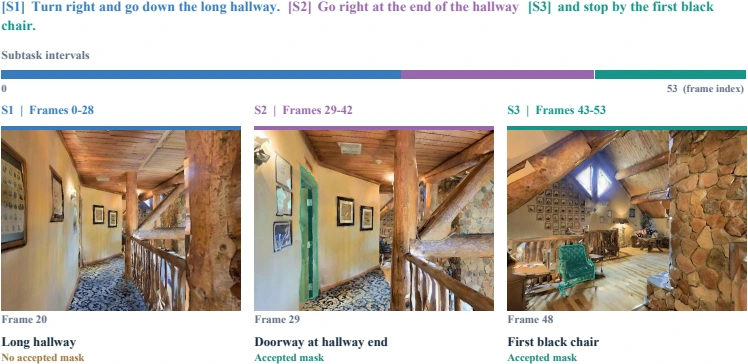
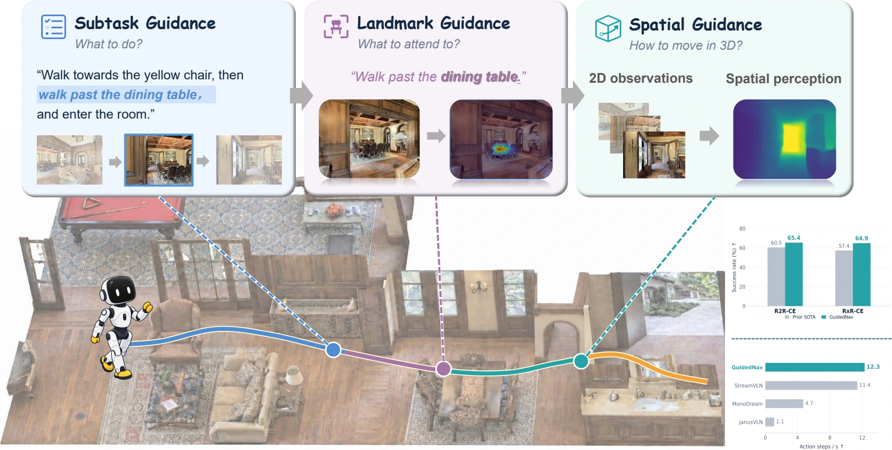
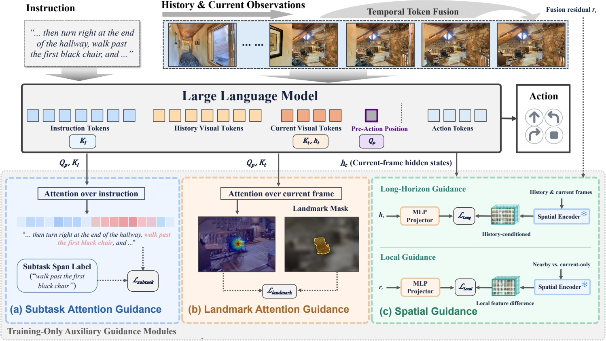
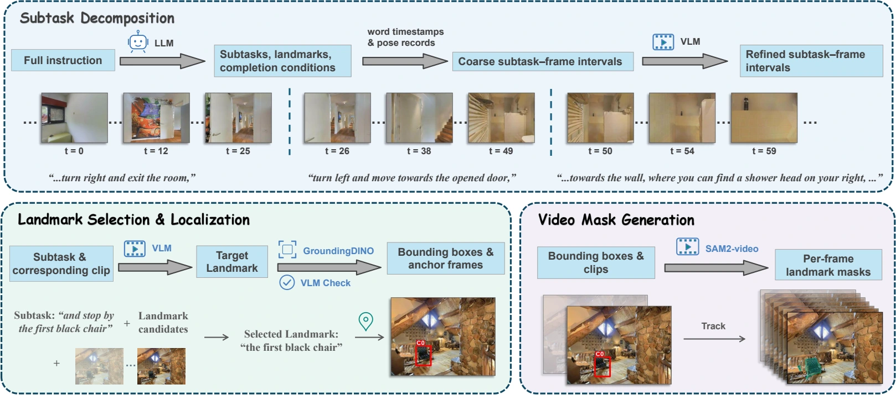
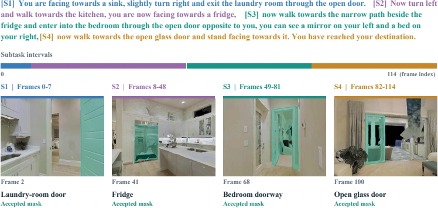
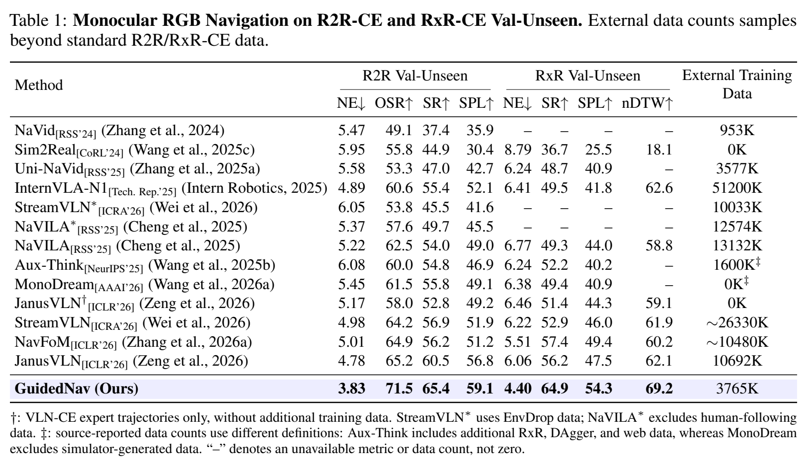
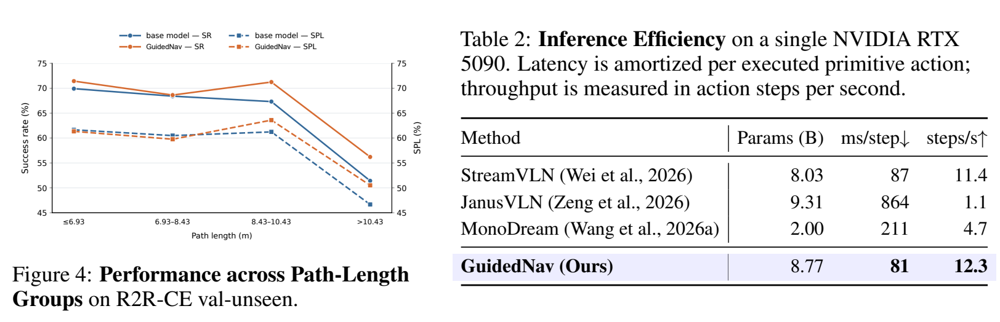

Step-aligned instruction spans
Reuses FGR2R subtasks and maps them onto continuous trajectories using recorded poses.


Vision-and-language navigation (VLN) requires an agent to track progress through an extended instruction, identify landmarks relevant to its current objective, and understand the surrounding spatial structure to act. End-to-end navigation policies typically rely on action supervision to implicitly learn these capabilities. Without explicit guidance on the evidence underlying each decision, however, policies can overfit to correlations predictive of training actions rather than learn the task-relevant grounding and geometry needed for generalization. Our insight is to guide the representations that connect instructions to actions: identifying what remains to be done determines which visual evidence matters, while understanding the geometry around that evidence informs how to move. We introduce GuidedNav, a unified framework that explicitly shapes these representations through training-time guidance. Subtask and landmark guidance steer native pre-action attention toward the active instruction segment and relevant visual regions, grounding action prediction in the current objective. Spatial guidance aligns the policy's internal representations with geometric features that capture long-horizon context and local spatial structure. Together, these objectives strengthen navigation capabilities while avoiding the inference overhead of intermediate textual reasoning and online geometric encoding. We also introduce Guided-R2R and Guided-RxR, two annotation-enriched navigation datasets that support more interpretable VLN research. GuidedNav establishes state-of-the-art performance among the compared monocular RGB policies, improving success rates by 8.1% and 13.1% relative to the strongest prior results on R2R-CE and RxR-CE val-unseen, respectively, while achieving faster inference. Extensive experiments further demonstrate the effectiveness and real-world transferability of our approach.


Reuses FGR2R subtasks and maps them onto continuous trajectories using recorded poses.

Decomposes English RxR instructions and refines temporal intervals before localizing landmarks and propagating masks.

Dataset videos show expert observation sequences and generated annotations. Missing or unreliable labels disable the corresponding auxiliary loss while preserving action supervision. These annotations are used during training and are not required as policy inputs at inference.


CITATION
@misc{guo2026guidednav,
title={GuidedNav: Shaping Vision-Language Navigation Representations
through Pre-Action Attention and Spatial Guidance},
author={Jingyu Guo and Jiaxin Huang and Chengxing Lin and Xiaoyu Luo
and Cheng Wen and Shanshan Ye and Tingjin Chu
and Shaoli Huang and Mingming Gong},
year={2026},
url={https://jingyu198.github.io/GuidedNav/}
}